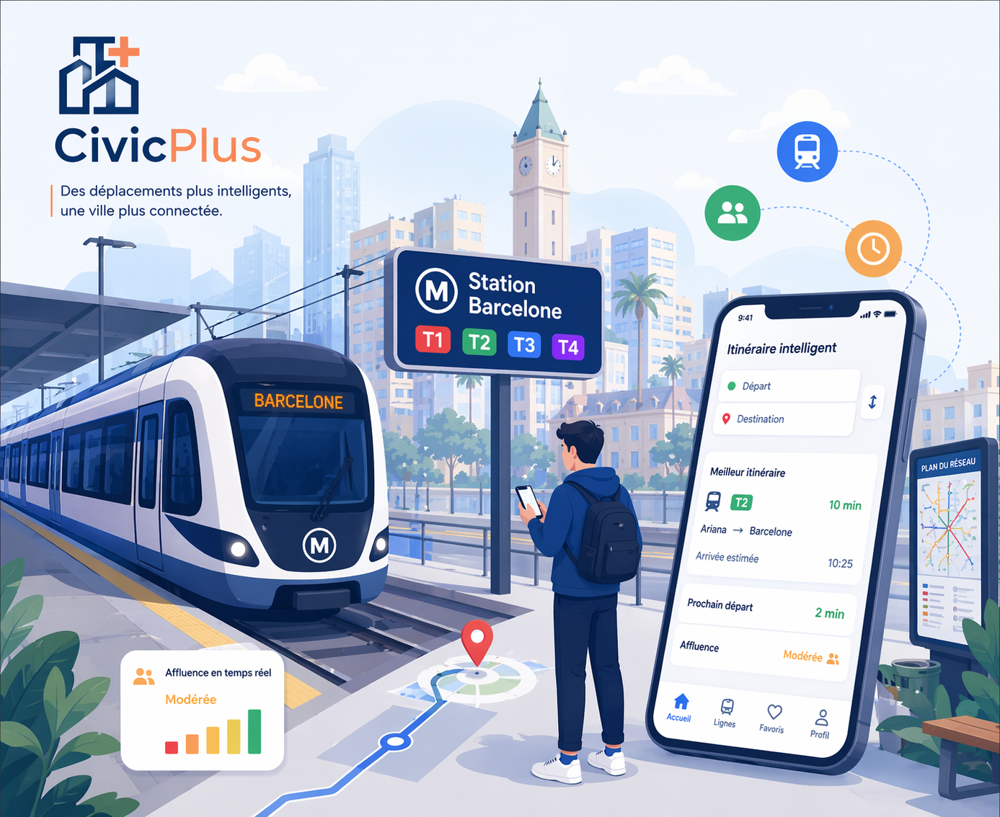

Déplacez-vous dans la ville avec une mobilité plus fluide, plus intelligente et plus prévisible.
Suivez les lignes disponibles, consultez les estimations d'arrivée, identifiez le niveau d'affluence et trouvez rapidement l'itinéraire qui convient le mieux à votre trajet quotidien.
Lignes suivies en temps réel
Temps moyen de mise à jour
Précision estimée d'arrivée

Ligne T2 dans 6 minutes vers Centre-Ville.
Niveau modéré sur les axes les plus demandés.
Pourquoi utiliser Smart Transport ?
Une interface conçue pour offrir aux citoyens une vision claire, moderne et utile du réseau de transport.
Itinéraires simplifiés
Trouvez rapidement le meilleur chemin entre deux points avec un affichage clair, compréhensible et pensé pour un usage quotidien.
Données utiles en direct
Visualisez les arrivées estimées, les retards probables et l'état général du trafic pour mieux anticiper vos déplacements.
Expérience citoyenne fiable
Le service centralise l'information de mobilité dans une présentation cohérente avec l'écosystème CivicPlus et ses autres modules.
Planifiez votre déplacement en quelques secondes
L'espace itinéraire peut vous guider depuis votre quartier jusqu'à votre destination en mettant en avant les correspondances les plus pratiques.
Départ
Choisissez votre position de départ pour afficher les lignes ou arrêts pertinents à proximité.
Correspondance optimisée
Repérez les itinéraires combinés qui réduisent le temps de trajet ou évitent les zones à forte affluence.
Arrivée estimée
Consultez une estimation claire de l'arrivée avec une lecture simple des délais et variations probables.
Ben Arous → Tunis
Arrivée vers la station Barcelone
Ariana → Tunis
Connexion vers le centre de Tunis
Ibn Khaldoun → Tunis
Accès direct au pôle central Barcelone
Manouba → Tunis
Trajet vers la station centrale Barcelone
Tunis → Ben Arous
Départ depuis la station Barcelone
Tunis → Ariana
Sortie rapide vers le nord de la ville
Tunis → Ibn Khaldoun
Départ depuis le centre de Tunis
Tunis → Manouba
Trajet au départ de Barcelone

Une meilleure mobilité commence par une meilleure visibilité.
Profitez d'un espace transport cohérent avec CivicPlus, pensé pour faciliter la consultation des lignes, l'orientation et le suivi des déplacements urbains.
- Consultation rapide des lignes disponibles
- Estimation d'arrivée et état de circulation
- Accès direct à la recherche d'itinéraire